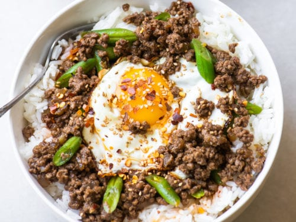

Egg Rice Bowl

A easy savory breakfast!
Ingredients
- White Rice
- Eggs
- Green Onions
- Ground Beef
- Butter
- Neutral Oil
- Sesame Seeds (optional)
Sauce Ingredients (per 1/lb ground beef)
- 1 Tablespoon Soy Sauce
- 1/2 Tablespoon Sugar
- 1 Tablespoon Mirin
- 1 Tablespoon Oyster Sauce
- 1/2 Tablespoon Minced Garlic
- Few Shakes of Black Pepper
Instructions
- Combine ingredients of the sauce and set aside
- Cut up green oinions into tiny slivers
- Use butter and scramble the eggs, set aside once done
- Add oil to a pan and cook the onions and ground beef
- Pour sauce over meat
- Plate with rice, eggs, and meat
- Add remaining green onions and sesame seeds for a garnish